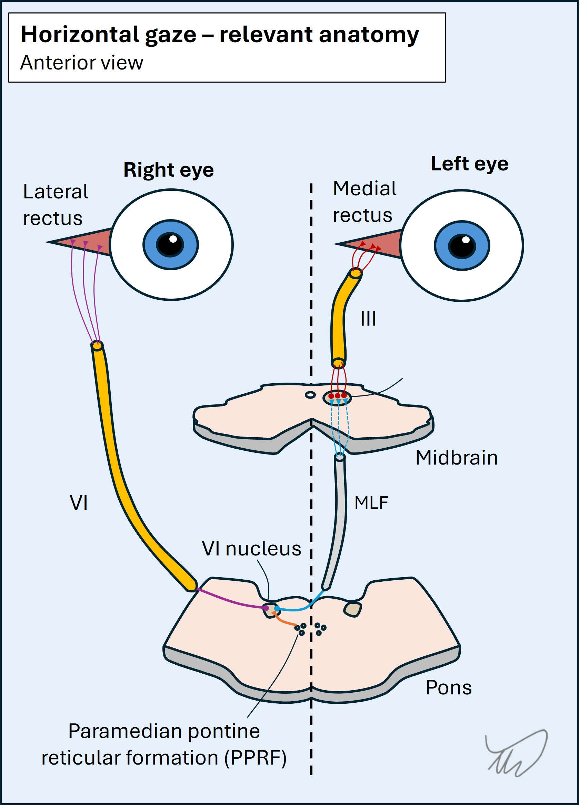
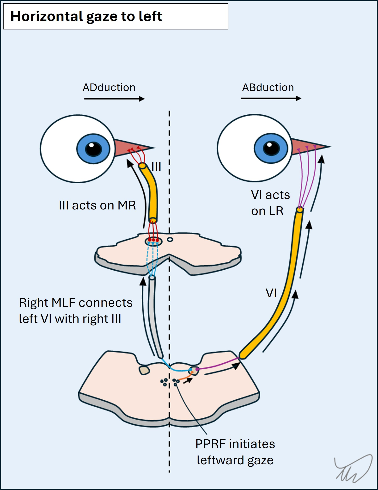
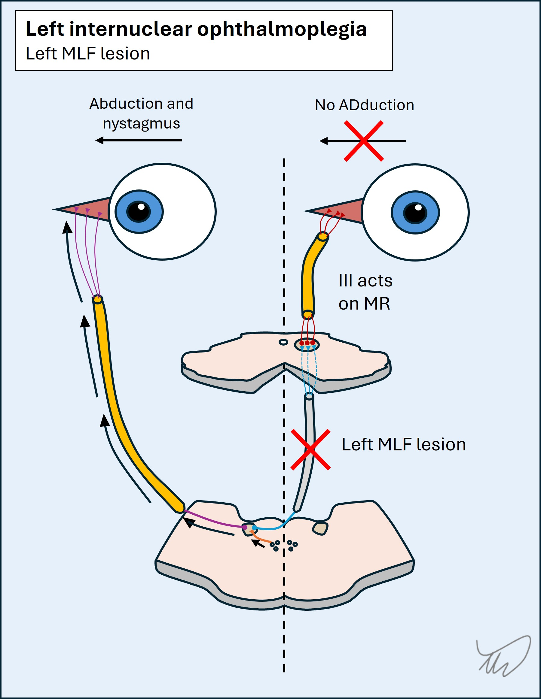
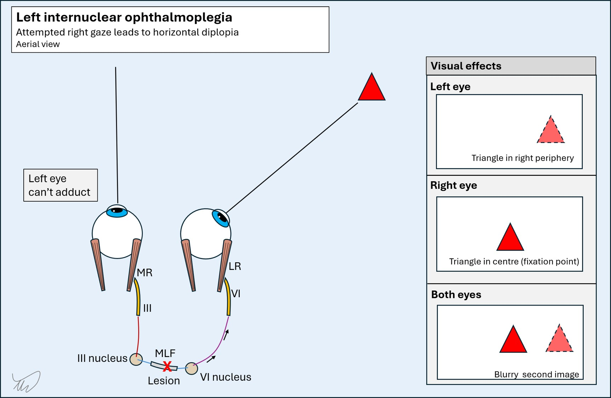
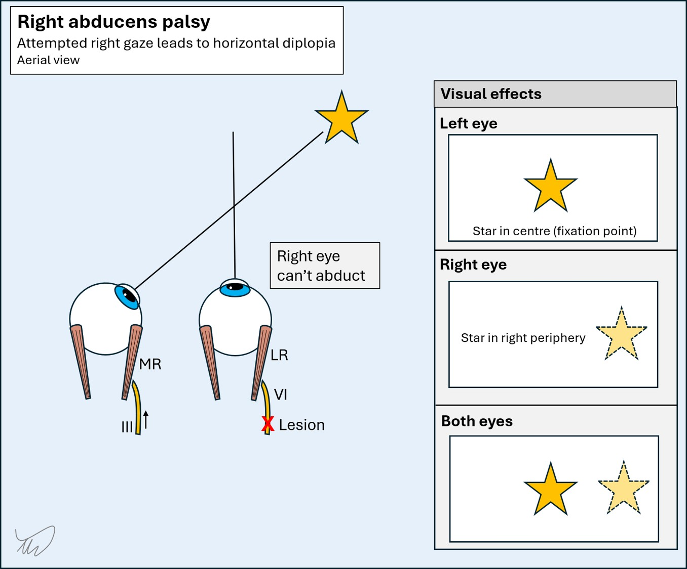

Case 18 - Double vision and jumping eyes
Where is the lesion?
Let's review the symptoms first.
The patient has acute-onset binocular diplopia, which indicates a problem with eye alignment (unlike monocular diplopia, which reflects eye pathology). There is something wrong with the systems that normally move the eyes in a conjugate manner. This could implicate brainstem nuclei and tracts, the cranial nerves, neuromuscular junction (NMJ, as in myasthaenia gravis), and the extraocular muscles.
The additional vertigo is concerning for pathology in the posterior fossa - vertigo with any central signs is always concerning for this, and not what is seen in vestibular diseases.
Secondly, there are numerous abnormal signs:
1. Skew deviationSkew deviation means vertical misalignment of the eyes not due to a single nerve palsy (e.g. IV) or individual muscle being paralysed. His right eye is sitting higher than the left, and when the left is covered, the right drifts down to take up fixation.
This implies damage in the brainstem or cerebellum though it doesn't precisely localise. It's a problem with the tonic balance between the two eyes' vertical positioning, so they drift out of plane with each other.
It does however take us away from more peripheral lesion sites such as cranial nerves or the NMJ. Hypertropia is seen with IV palsy due to paralysis of superior oblique, and sometimes in paralysis of the inferior division of III, with the eyeball depressor muscles weakened and preservation of the elevators, but the signs don't fit either of these, and the cover test would not lead to the hypertropic eye achieving fixation - the muscles needed to help it move downward would be paralysed.
2. Upbeat nystagmusUpbeat nystagmus is a marker of central nervous system pathology - it is not seen in vestibular (peripheral) causes of vertigo. Again, it doesn't localise exactly to one site - but brainstem and cerebellar lesions in various locations can both cause it.
3. Torsional nystagmusTorsional nystagmus is less specific – it can be seen in central lesions, though is common in vestibular pathology, but with horizontal nystagmus co-existing. Isolated torsional nystagmus is more concerning for a central lesion, and in combination with upbeat nystagmus, there is definitely a central cause.
4. Right internuclear ophthalmoplegia (INO)This is the most useful sign here from the perspective of localisation.
The patient cannot adduct the right eye past the midline when attempting to look left. While this is seen in a III palsy too, there would be other features of this - and there are none. Furthermore, it isn't true paralysis - he can still adduct the eye during convergence. The problem is with conjugate horizontal left gaze.
Conjugate horizontal gazeConjugate horizontal left gaze requires both eyes to move to the left in a coordinated manner. There are a few steps to this but the end result is activity in left VI and right III to their target muscles - the lateral and medial recti on opposite sides. They need a way of communicating this, and this is via the medial longitudinal fasciculus (MLF) - an interneuron connecting two nuclei. The full process is as follows:


When there is a breakdown of the link between left VI and right III - due to a lesion in the right MLF - the result is that the left eye can abduct during left horizontal gaze, but the right eye cannot adduct. The left eye then has abducting nystagmus in the lateral position. This is internuclear ophthalmoplegia. The issue is with the communication between two nucle, hence it is internuclear.

Note - adduction is not totally paralysed. III can still adduct the eye during convergence, which doesn't involve this pathway. The problem is internuclear, and only relevant to conjugate horizontal gaze. This is called dissociation of convergence. It's important to test convergence in people who can't adduct an eye.
The overall effect is shown in the video below.
Binocular horizontal diplopia: the 'outer image' ruleThere is a useful rule in binocular horizontal diplopia: 'the outer image is false'. One eye is failing to move properly to fixate on the target, so it remains peripheral, and hence 'false'.
To explain this, suppose we are seeing a patient with binocular diplopia looking to the right. Is the issue a left INO or a right VI palsy?
In a left INO, the person cannot look at a target in the right periphery with both eyes. The left eye still sees it in the periphery while the right fixates on it and sees it in the centre of vision. Sometimes it's not obvious which eye is failing to move properly - so we can work out which eye has the problem by testing each eye alone. Whichever sees the image as more peripheral ('outer') - this is the eye with the restricted movement. The diagram below shows this for a left INO.

In contrast, in a right VI palsy, which would also cause binocular horizontal diplopia, the right eye sees the false outer image:

Convergence - and the level of the INOConvergence helps us further in localisation of an INO in terms of the lesion's height.
A lesion in the MLF as it ascends through the pons leaves convergence intact - but a lesion higher up in the midbrain can lead to INO with impaired convergence, as the centres involved in convergence can also be damaged at this level. If convergence is affected - i.e. a higher lesion - this is sometimes called an anterior INO. If intact, the lesion is lower down - a posterior INO. However, this rule is not 100% reliable.
Bilateral INOBilateral INO is also quite common, as the MLFs are very close to another either side of the midline - so central dorsal pontine lesions can affect both. The result is as below:
Bilateral INO also sometimes features a degree of exotropia in the eyes, and a term still-used - though not particularly kind and arguably not the best term - is 'wall-eyed bilateral INO' (WEBINO). It is very characteristic of multiple sclerosis (MS), and there is often upbeat nystagmus also present.
SummaryWe know there's a problem in the right dorsal brainstem somewhere between pons and midbrain, as the right MLF is involved - this is supported further by skew deviation and nystagmus with central characteristics. Spared convergence suggests this is lower than the midbrain. The right PPRF isn't involved nor VI or VII. The best bet is a right dorsal pons lesion, a little higher up than the inferior pons.
What is the lesion?